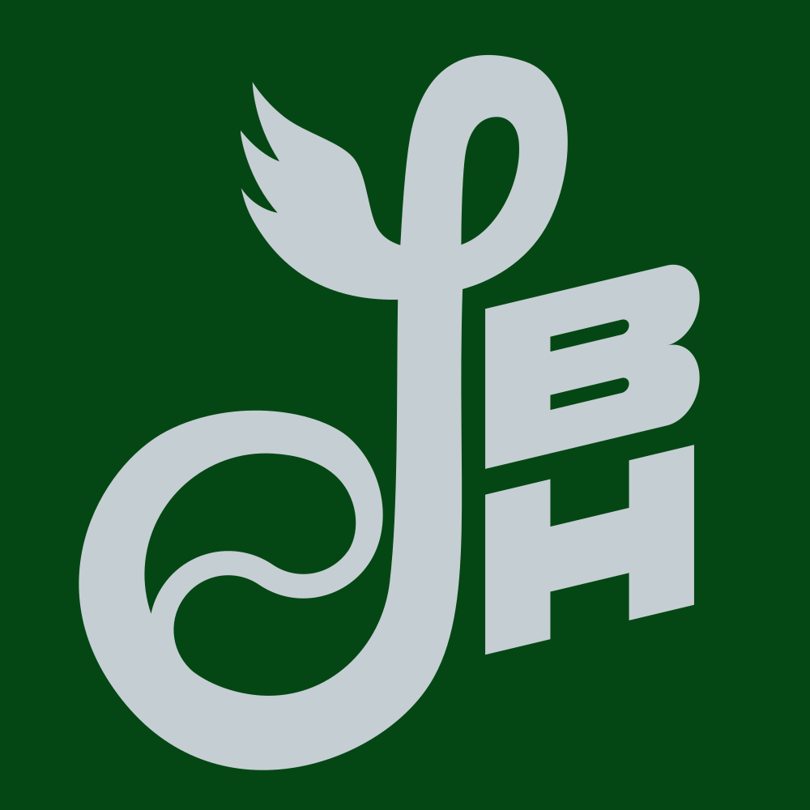
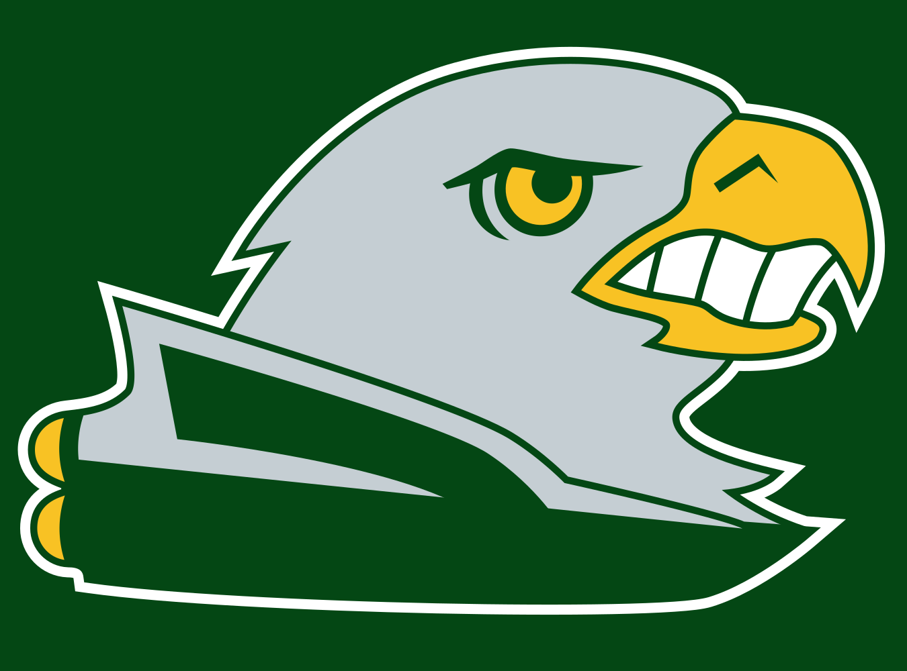

Miscellaneous Logo Designs
Rather than posting one-off logo designs I work on as separate posts, which would result in a lot of clutter, I’ll just append them to this post.
South Bend Silver Hawks (January 2020)
The South Bend Silver Hawks were a minor league baseball team in the Midwest League from 1994 to 2014, at which point they were renamed the South Bend Cubs. South Bend was the home of the car company Studebaker and, in particular, it was the manufacturing site for the Studebaker Silver Hawk. I always prefer when minor league teams have their own regional inspired nicknames, rather than just taking their parent club’s name, so I wanted to see what an updated Silver Hawks identity could look like. Like the real life Silver Hawks, I used green, yellow, and silver, but I came up with a more distinctive monogram (here’s the old one) and a new hawk logo that incorporates the car the team is named after. The ‘S’ in the monogram is based on the ‘S’ in the Studebaker script, but with a wing, to represent the Hawks, and a baseball, inspired by the old Phillies logo. I do realize that birds don’t have teeth, but I wanted to include them as a callback to the old hawk logo.
{kind=link}
 
